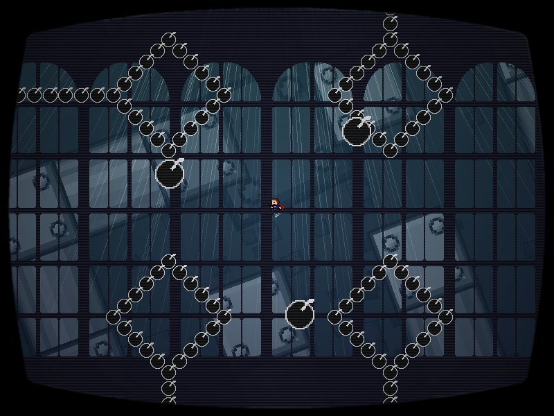
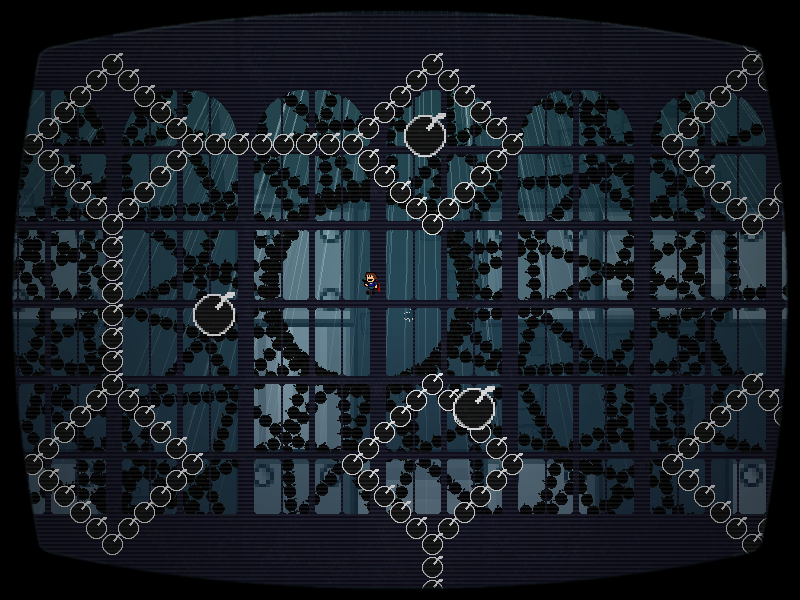
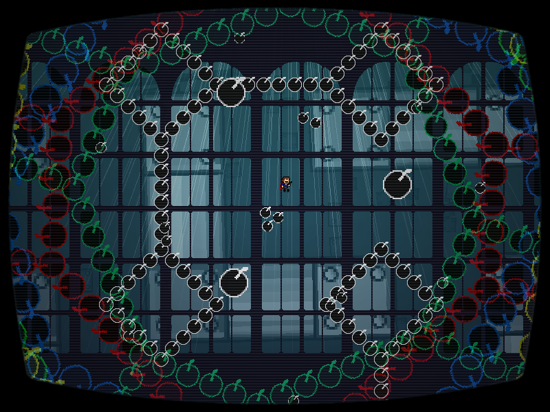

| creator | segment | label | jump |
|---|---|---|---|
| yuzuyu(main) NN(supervise) |
1:29.84~1:32.98 | R+R*A/Q | infinite |
迷路を題材とした弾幕です。
7-1より存在している迷路および迷路状弾幕に関して、背景の迷路が90°傾いた状態（傾く方向はランダム）で影を追跡することを目的としています。
1:31.30において、背景における影の位置が迷路状弾幕のどの位置に対応するかを判断し、その位置に十分近づいている必要があります（fig.7-2.1.a, fig.7-2.1.b）。

